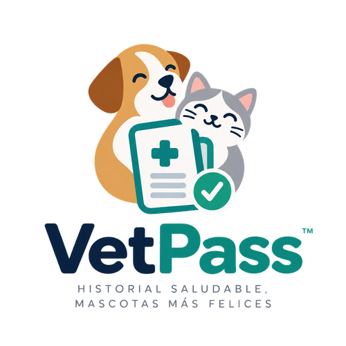
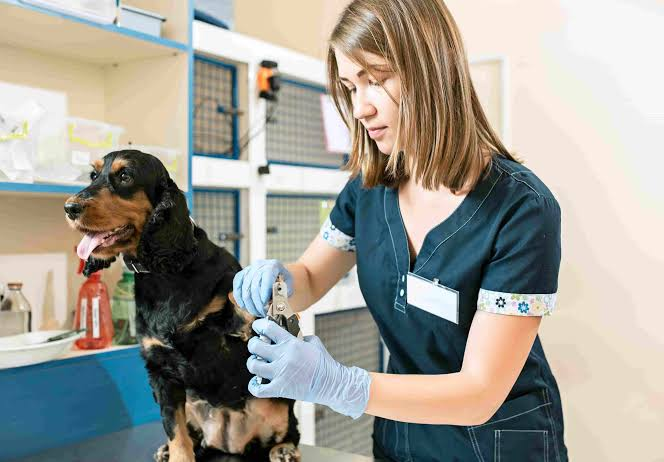
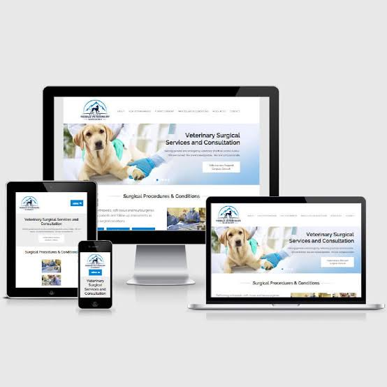

 ES
ES
 EN
EN

ES
EN
VetPass es una plataforma web y móvil que digitaliza la cartilla de vacunación y el historial veterinario de perros y gatos. Elimina la dependencia de documentos físicos expuestos a pérdida o deterioro.
Ver DemoVetPass centraliza la información clínica para que dejes de tomar decisiones médicas basadas en antecedentes incompletos.
Las clínicas gestionan historiales en papel y cartillas que se deterioran. El expediente queda dividido entre la clínica y el dueño de la mascota.
Clínicas veterinarias pequeñas y medianas en Perú, personal de recepción, y dueños de perros y gatos.
El personal de la clínica registra información desde una app web y el dueño la consulta desde una app móvil en cualquier momento.
Impacto real en la calidad de atención y reducción de tiempos en consulta.
Sustituye la cartilla de vacunación física por un respaldo digital inalterable y siempre accesible.
Genera automáticamente la cartilla a partir del esquema de la especie (canina o felina).
El dueño puede consultar perfil, cartillas y recetas asociadas a la atención desde su móvil.

Nuestra plataforma centraliza, automatiza y protege la información de tus pacientes en un solo lugar.
Permite registrar atenciones del historial veterinario mediante un formato preestablecido[cite: 1].
Determina el estado de la cartilla (al día, pendiente o vencida)[cite: 1].
Emisión de recetas médicas asociadas a una atención[cite: 1].
Validación de edad mínima e intervalos entre dosis para evitar errores.
Acceso de solo lectura para el dueño, permitiéndole consultar historial en todo momento[cite: 1].
Registro y edición de información clínica atribución exclusiva del personal[cite: 1].
Ingresa datos y genera automáticamente la cartilla de vacunación según especie.
El veterinario registra vacunas y detalles en el historial web.
Los datos se guardan en la nube de forma segura y estructurada.
El dueño revisa recetas y el estado de la cartilla desde la app.

Construida con altos estándares de calidad y diseño centrado en el usuario[cite: 1].
Interfaz optimizada para el flujo de trabajo en la recepción y consultorio de clínicas independientes.
Base de datos segura que garantiza respaldo inmediato de historiales y esquemas de vacunación.
Diseñada específicamente para dueños de mascotas, con UI intuitiva para consulta rápida de recetas y vacunas.
Planes adaptados a clínicas veterinarias independientes.
Para veterinarios independientes
Para clínicas en crecimiento
Para múltiples sedes
Digitalización enfocada en resolver problemas reales de las clínicas peruanas.
Evita extravíos y deterioro por fragilidad del soporte físico en papel.
Termina con la información dispersa entre la clínica y el dueño.
Reglas exactas para especies predominantes: perros y gatos.
Diferénciate ofreciendo al dueño de la mascota tecnología para su móvil.
Construimos productos de software con altos estándares de calidad, verificación continua y diseño centrado en el usuario.


Prácticas independientes.
Atención integral veterinaria.
Padres de mascotas responsables.
Caninos y felinos.
Respuestas rápidas antes de agendar una demo.
No, quedan fuera del alcance: reserva de citas, módulos de pagos y facturación, gestión de inventario, etc. Nos enfocamos 100% en el historial clínico.
No, el registro y la edición son atribución exclusiva del personal de la clínica. El dueño tiene permisos solo de consulta.
Actualmente la plataforma soporta únicamente las especies canina y felina, por ser las predominantes en la atención veterinaria.